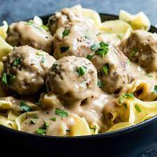

Swedish Meatballs

Description
These are your classic swedish meatballs,
a great comfort food. They'll have you coming back
for seconds for sure.
Ingredients
- 1 package of veggie meatballs
- 5 tbsp butter
- 3 tbsp flour
- 2 cups vegetable broth
- 1 cup heavy cream
- 1 tbsp Worcestershire sauce
- 1 tsp dijon mustard
- 1 pack egg noodles
Steps
- Cook egg noodles per package
- Add butter and flour in saucepan, whisk
until brown
- Slowly stir in broth and heavy cream
- Add Worcestershire sauce and mustard, bring
to simmer until it starts to thicken
- Cook meatballs according to package directions
- Add meatballs to saucepan and let simmer
for 1-2 minutes
- Serve and enjoy!